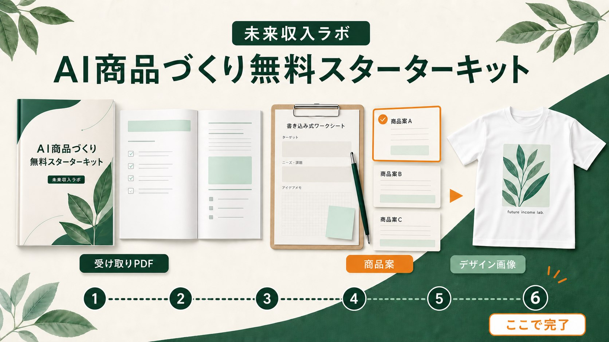

- 全体ロードマップ無料で終わる場所と、出品までの次工程を確認します。
- テーマ・ニッチ整理誰に、どんな場面で使ってもらうかを絞ります。
- 商品案の選択シート候補を出し、採用・保留・見送りに分けます。
AI商品づくり無料スターターキット
最初の1商品案と、販売に使うデザイン画像を約60分で形にする
最初に受け取りPDFを開き、書かれている順番で進めます。テーマ探しから最終確認まで、最初の1枚に必要な判断を6つに絞りました。

WHAT YOU RECEIVE
受け取りPDFに
入っているもの。
情報を集める資料ではなく、最初の1案を決めるために書き込みながら使うガイドです。
- 初心者向けデザイン4型文字中央型、ワンポイント型、上文字＋中央素材型、丸バッジ型から選びます。
- 画像生成プロンプトの入口文字、型、素材、避けることを1つの指示にまとめます。
- 出品前確認チェック綴り、読みやすさ、権利、見え方を確認します。
約60分は目安です。画像の作り直しやテーマ選びに時間がかかる場合があります。1回で完璧にせず、最初の候補を残すことを優先します。
HOW TO USE
PDFを開いたら、
6つだけ進める。
途中で別ページへ移動せず、商品案とデザイン画像ができるところまで一続きで進めます。
01
テーマを探す好きなこと、経験、贈る相手から候補を出す
02
ニッチを絞る誰の、どんな場面に向けた商品かを決める
03
商品案を選ぶ最初に試す1案を、判断軸に沿って選ぶ
04
見た目を決める文字、図柄、配置、雰囲気を言葉にする
05
画像をつくるAI画像生成へ渡す指示を作り、デザイン画像を出す
06
最終確認する権利、文字、見え方、出品前の確認を行う
STARTER COMPLETE
ここで、無料スターターキットは完了です。
商品案と販売に使うデザイン画像ができました。次は、その画像をPrintifyなどの商品へ登録し、Etsyの商品ページを作って公開する工程です。
NEXT STEP
画像を、公開できる商品へ。
ここから先はスターターキットには含まれません。完成画像をPrintifyの商品へ登録し、Etsyの商品ページを公開する工程です。
01
販売先と商品を選ぶEtsyとPrintifyを準備し、Tシャツなど最初の商品を決める
02
商品・色・サイズを決める印刷会社、ブランク、販売色、サイズ範囲を確認する
03
画像を配置するデザインをアップロードし、印刷位置と大きさを調整する
04
販売情報を整えるモックアップ、タイトル、説明文、タグ、価格を入力する
05
送料・権利・表示を確認する配送プロフィール、手数料、赤字、商標、商品表示を確認する
06
公開して実際の表示を見るEtsyで公開し、スマホとパソコンの見え方を確認する
公開準備は一度で終わらない場合があります。Etsyの本人確認やPayoneer設定には日数がかかることがあります。先にアカウント準備を進めると、公開直前で止まりにくくなります。
NEED A GUIDE?
難しいときは、
進め方を選べます。
UdemyもBrainも出品まで進みます。動画で1商品を公開するか、手順書と道具で運営まで整えるかの違いです。
UDEMY
動画を見ながら、最初の商品を公開
画面を見て、止めて、自分の画面で同じ操作をしたい方へ。
- 動画で操作を確認
- Etsy公開まで
- 近日公開
BRAIN
手順書を見ながら、運営まで自分で回す
需要調査、次の商品、注文後の連絡、入金確認まで続けたい方へ。
- 出品HowTo全23章
- ショップ運営編
- 道具一式つき
FAQ
受け取る前の確認。
無料範囲と必要な環境を先に確認できます。
本当に無料ですか？
AI商品づくり無料スターターキットの受け取りに料金はかかりません。Etsyの開設・出品、外部サービスの有料プランなどは別途費用が発生する場合があります。
PDFだけでEtsyへ公開できますか？
PDFの到達点は商品案とデザイン画像です。出品工程の概略は確認できますが、画面操作まで順番に進めたい場合はUdemy、運営まで続けたい場合はBrainが向いています。
ChatGPTの有料版は必要ですか？
無料枠でも進められますが、利用上限や画像生成の仕様は変わることがあります。作り直しが多い場合は有料プランの方が進めやすいことがあります。
売れる商品案を教えてもらえますか？
売上は保証できません。商品案を選ぶ判断軸と、公開後に確認する数字を残し、次の検証へ進みやすくします。